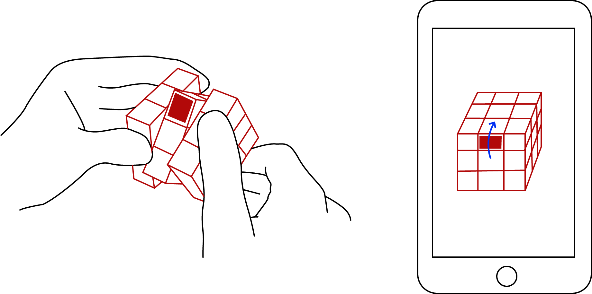

Mathematically the Rubik's Cube is a permutation group and students learn this in an eighth grade mathematics class. However, most people don’t know how to solve the Rubik’s Cube. We present the interactive rubik’s cube which allows students to solve puzzles by giving feedback and to learn mathematical theory.
2D Conceptual Image
Our original plan was to connect interactive rubik's cube with mobile app so that users are able to see which side they should rotate to solve puzzles. This algorithm is based on user's behavior pattern and keeps a record of turns and flips.

Hardware/Software Configurations
**Software is still in progress.
1. DF-040 Rotary Sensor
Position sensor which is used for determining the angular position of a rotating shaft
2. MPU 6050 6 DOF Sensor
6-axis MotionTracking devices designed for the low power, low cost, and high performance requirements of smartphones, tablets and wearable sensors.
Use-Cases
1. Teaching math using rubik's cube
This interactive rubik's cube will allow childeren to learn about a permutation group in an eigth grade mathematics class. Also, this experience can improve mathematical self-Efficacy.
2. Helping seniors with dementia
The Rubik's Cube puzzle can be helpful for seniors because it requires players to track in short-term memory where the blocks are.
Limitations
1. Output Issue
Need at least 14 outputs but our Arduino board has 12 outputs
2. Size&Space
Even at 1.5x, not a lot of open space
3.Testing Issues
Without correct outputs, difficult to implement code correctly